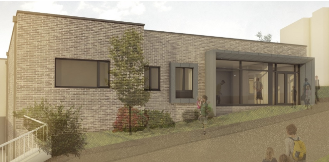
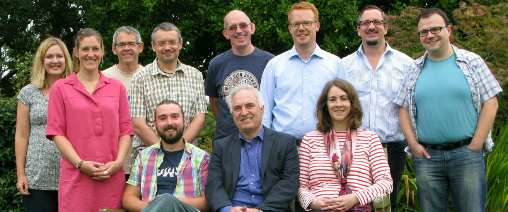
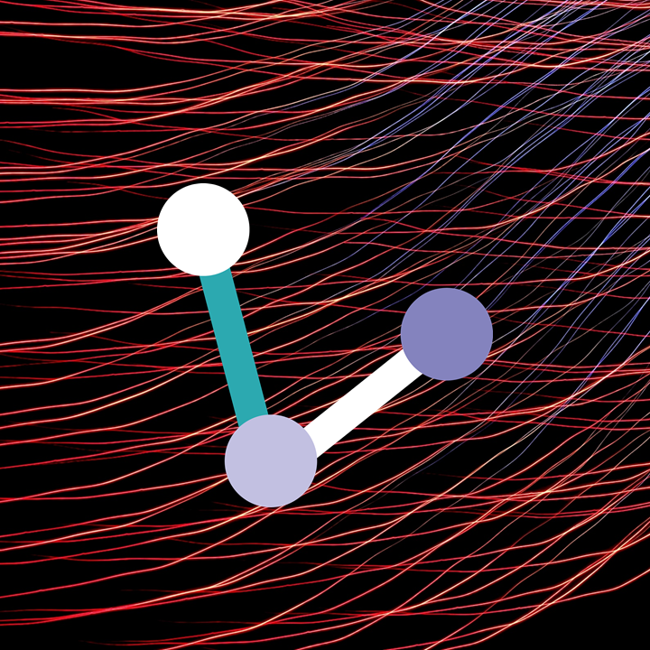
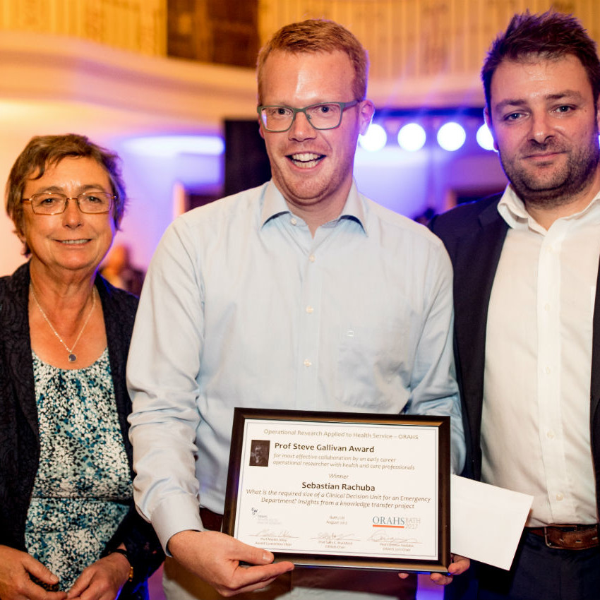
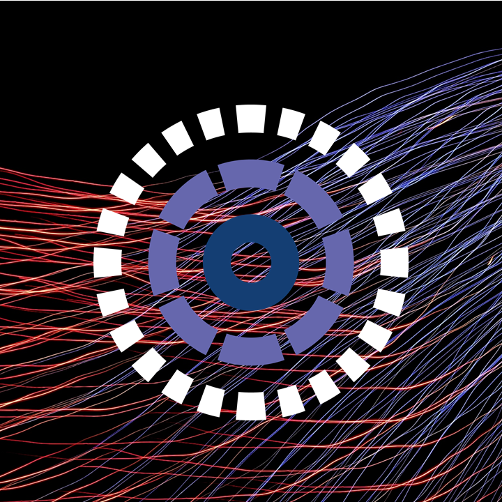
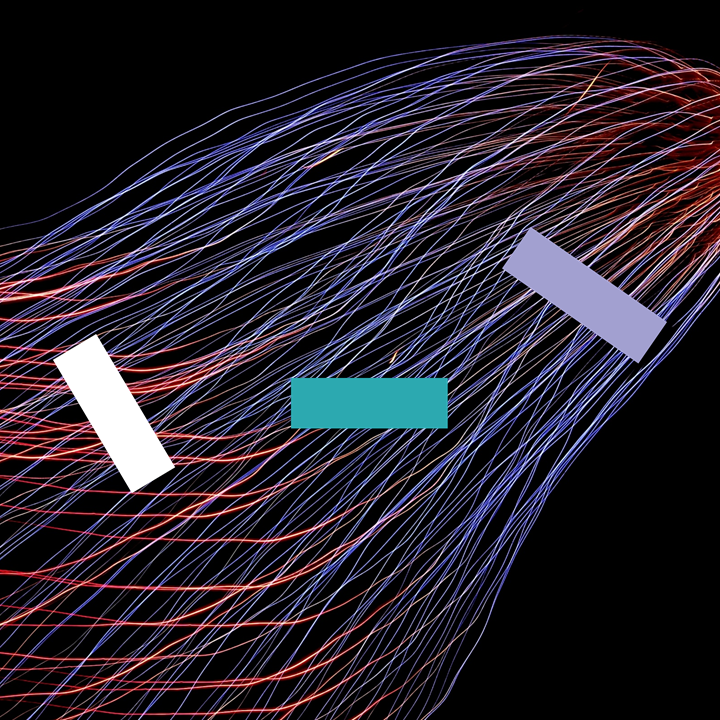

Transforming Stroke Care Through Simulation
Posted Jul 17, 2025
One HSMA graduate’s model could save over £2 million annually - click to find out more!
Jemma Phillips, Sammi Rosser, Dr Dan Chalk, PenARC Team
Posted Jul 17, 2025
One HSMA graduate’s model could save over £2 million annually - click to find out more!
Posted Jun 23, 2025
The HSMA team are running a workshop on simulation modelling, aimed at decision makers. No previous knowledge of programming or simulation is required. Register now!
Posted Apr 24, 2025
The HSMA 6 Showcase will take place online on 24th June 2025 (0900 - 1530). Register now!
Posted Jun 28, 2023
A team of Data Scientists have used Machine Learning to develop a model which could help services tackle inequalities and minimise carbon output in their planning and delivery. The model, estimated to be up to 80 times faster than manual methods has the potential to save vital resources in service planning and delivery.
Posted Jun 19, 2023
Researchers have used operational modelling and data science to reduce waiting times for patients and help reduce a backlog in rheumatology services.
Posted Dec 19, 2022
At a time of increased pressure on NHS services a project using computer modelling has helped a hospital Trust reduce urgent care wait times and improve conditions for staff working on the front line.
Posted Apr 20, 2022
Our national Health Services Modelling Associates (HSMA) programme returned in October as HSMA 5. Using an innovative mentoring system, the scheme offers staff working in policing and health and social care organisations the opportunity to develop skills in modelling and data science and apply them, in small project groups, to a project to address an important issue for their organisation.
Posted Mar 16, 2022
Our national Health Services Modelling Associates (HSMA) programme is using an innovative mentoring system to help address some of the biggest issues facing health and social care and build service capacity.
Posted Mar 8, 2022
Research from NIHR PenARC (formerly PenCLAHRC) has been featured in a newly released flagship document that demonstrates the impact of National Institute for Health Research (NIHR) funded applied research to transform health and care across England.
Posted May 17, 2021
Read about Dr Adam Kwiatkowski, a GP and Clinical Director from Torridge, North Devon, who used advanced data modelling skills learned as a Health Services Modelling Associate (HSMA) to develop a Discrete Event Simulation model to manage his practice’s vaccine clinic.
Posted May 17, 2021
Research from NIHR PenARC (formerly PenCLAHRC) has been featured in a newly released flagship document that demonstrates the impact of National Institute for Health Research (NIHR) funded applied research to transform health and care across England.

Posted May 8, 2021
With the popularity and success of HSMA programme, and the increased interest in modelling solutions to organisational problems, HSMA opens its doors nationally for the first time for its fifth iteration in 2022.

Posted Oct 6, 2020
The construction of a new £11.8 million Mental Health facility, supported by research undertaken as part of our Health Services Modelling Associates Programme (HSMA), has begun at Devon Partnership NHS Trust’s (DPT) Torbay Hospital.

Posted Sep 22, 2020
Read about Pearn charts, which support visualising a patient’s complex journey through services and systems, highlighting a build-up of activity prior to crisis. Find out more about this methodology that may assist in diverting away from high level services and plans for its adoption in the South West.

Posted Jul 29, 2020
Due to the COVID-19 pandemic and the implications for those working in the health and social care sectors, HSMA 3 will be run as an entirely online course with a combination of live lectures, pre-recorded lectures on YouTube and online resources and Zoom-based group discussions.

Posted Feb 12, 2020
Find out more about a pioneering collaboration between PenARC and University Hospitals Plymouth NHS Trust (UHP) that led to the establishment of a new post at UHP using operational research to support the Trust’s decision-making processes – the first of its kind in the South West.
Posted Jan 8, 2020
Find out more about the launch of the first ever Police Service Modelling Associates Programme (PSMA), which saw associates, recruited from Devon & Cornwall Police staff, the College of Policing and other regional forces, receiving mentoring and training to support them to undertake projects which will led to real impact and the embedding of evidence-based decision making and operational research skills within the service.
Posted Feb 6, 2019
Find out more about how the HSMA 2 showcase went.
Posted Jan 9, 2019
Find out more about Karl Vile’s HSMA project findings, encompassing demand and capacity modelling as well as geographic modelling.

Posted Dec 19, 2018
Find out more about how Karl Vile’s HSMA project findings were included in DPT’s recently successful application for government investment from a national package designed to modernise and transform NHS services. A £50 million investment will deliver enhanced new facilities and equipment for NHS patients in Devon, of which 8 million will provide essential extra capacity for people who need inpatient care in the form of a new adult mental health ward for Torbay Hospital, which will ultimately reduce the need to send people out of Devon for treatment.

Posted Dec 18, 2018
Find out more about the showcase for HSMA 2.

Posted Jun 4, 2018
Find out more about the research team HSMA sits within.
Posted Mar 29, 2018
Find out more about how HSMA is helping DPT to conduct advanced operational modelling in-house.


Posted Jan 17, 2018
Find out more about how the collaboration between HSMA and the SW AHSN.
Posted Oct 25, 2017
Following a hugely successful first round of the Health Service Modelling Associate (HSMA) Programme, a second round of the scheme – HSMA 2 – has been launched, a joint initiative between PenCLAHRC and the South West Academic Health Science Network (SW ASHN).

Posted Oct 20, 2017
Find out more about how HSMA is helping UHPNT to conduct advanced operational modelling in-house.

Posted Sep 29, 2017
Many congratulations to Sebastian Rachuba, who was awarded the Steve Gallivan prize at the EURO Working Group on Operational Research Applied to Health Services (ORAHS) 2017 conference for his project with the RD&E Hospital on modelling capacity requirements for the CDU in the A&E (which was conducted alongside the HSMA scheme).

Posted Jul 24, 2017
Find out more about how HSMA is helping SWASFT to conduct advanced operational modelling in-house.

Posted Mar 31, 2017
Staff from NHS Trusts across the South West came together with PenCLAHRC researchers to celebrate the success of an innovative programme aimed at tackling problems faced by the health service.

Posted Mar 10, 2017
HSMA helped Devon Partnership Trust improve mental healthcare provision in the region - find out more about how.